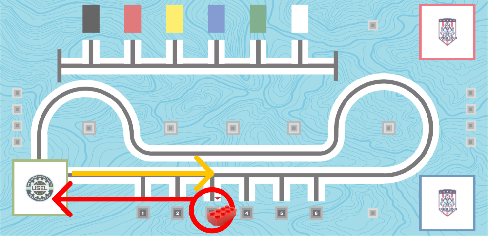

Master ultrasonic sensor programming for distance measurement and create intelligent obstacle avoidance behaviors!
📚 Learning Objectives: Understand ultrasonic sensor principles, implement distance measurement code using AI assistance, and develop autonomous navigation strategies.
Slide 2 / 5
📚 Review: Color Sensor Mastery
Building on your previous sensor experience for today's challenge
🎨 Color Sensor Experience
✅ What You've Learned
🔸 Connected to Port B
🔸 Detected block colors accurately
🔸 Used light reflection principles
🔸 Coordinated with arm positioning
🔸 Made decisions based on color data
🎨
Visual Detection
Light-based sensing
Short range precision
🎯 Today's Application: Smart Object Selection
🤖 Combining Color Detection with Ultrasonic Navigation
🎨 Color Sensor Role
🔸 Identify object colors
🔸 Determine which blocks to grab
🔸 Make intelligent selection decisions
🔸 Verify target object before pickup
📡 Ultrasonic Sensor Role
🔸 Navigate safely to objects
🔸 Maintain safe distances
🔸 Avoid collisions during approach
🔸 Position robot for color scanning
🔄 Integration Strategy
📡
Navigate
Use ultrasonic to approach
→
🎨
Identify
Use color sensor to detect
→
🦾
Select
Grab correct colored object
🧠 Key Insight: Your color sensor expertise becomes the "brain" for decision-making, while the ultrasonic sensor provides the "eyes" for safe navigation. Together, they enable intelligent, autonomous object selection!
Slide 3 / 5
🔊 How Ultrasonic Sensors Work
🎵 Sound Wave Principle
Ultrasonic sensors use high-frequency sound waves (above human hearing) to measure distance through echo location, similar to how bats navigate in the dark.
📡 Ultrasonic Wave Process
📤
TRANSMIT
Send sound wave
🎯
REFLECT
Bounce off object
📥
RECEIVE
Detect echo
Sound travels at 343 meters/second in air
🧮 Distance Calculation Formula
Distance = (Time × Speed) ÷ 2
Time
Round-trip duration
Speed
343 m/s (sound)
÷ 2
One-way distance
📊 LEGO SPIKE Ultrasonic Specifications
📏 Range: 1-400 cm
⚡ Accuracy: ±1 cm
🔬 Key Physics: The sensor automatically handles the complex calculations, returning distance values in centimeters. Understanding the principle helps you optimize sensor placement and interpret readings accurately.
Slide 4 / 5
🐍 AI Prompt: Ultrasonic Sensor Programming
🎯 Your Programming Command to AI Assistant
Generate Python code for LEGO SPIKE ultrasonic sensor distance measurement.
ROBOT CONFIGURATION:
- Choose correct robot build (2025.2 USEL RoboPalooza Full Build)
- Ultrasonic sensor connected to Port B
- Measure distance to objects in centimeters
- Display readings on hub screen
PROGRAMMING REQUIREMENTS:
- Create function to read distance continuously
- Add distance threshold detection (obstacle warning)
- Display distance values with clear formatting
📝 Example Student Prompt
Student's Example Command:
"The robot drives forward until the distance sensor detects a block within 100mm, records how many wheel degrees it traveled, move forward 3 inches, turns right ~90°, raises the arm 45°, drives 5 in forward, lowers the arm 45°, drives 5 in backward, turns left ~90°, then drives backward the exact distance it recorded earlier plus 3 inches."
🔧 Key Programming Concepts
📡 Sensor Reading
distance_sensor.distance('D') returns millimeters
Divide by 10 for centimeters
⚠️ Error Handling
Check for None values when no object detected
Prevents program crashes
Slide 5 / 5
⚡ Challenge: Object Detection
Create an intelligent robot that navigates using ultrasonic feedback!

🎯 Mission Objectives
🔍 Phase 1: Detection Behavior
📍 Move forward until block is detected by the distance sensor
📍 Stop once detected
🚚 Phase 2: Retrieval
📍 Grab detected object with arms
📍 Bring object back to starting square
🗺️ Challenge Course Layout
🟢
Start Zone
(Robot begins here)
→
📦
Object Pickup
(Detect and grab object)
→
🏁
Finish Zone
(Return back to start position)
🤖 Challenge Programming Strategy
Program your LEGO SPIKE robot for autonomous navigation using ultrasonic sensor.
SENSOR CONFIGURATION:
- Ultrasonic sensor on Port B
- Drive motors on Ports E and F
- Hub LEDs for status indication
PROGRAMMING REQUIREMENTS:
- Continuous distance monitoring
- Forward movement until object detected
- Stop and turn when detected
- Turn and use arm to grab object
- Move back to starting position
🏁 Success Criteria:
• Detect object with distance sensor
• Use skills from previous lessons to grab the object
• Successfully come back to the starting position
• Robot needs to start and finish within the starting square
• Demonstrate smooth turning and movement
🏆 Navigation Mastery Achieved!
You've mastered ultrasonic sensor programming for autonomous robot navigation!